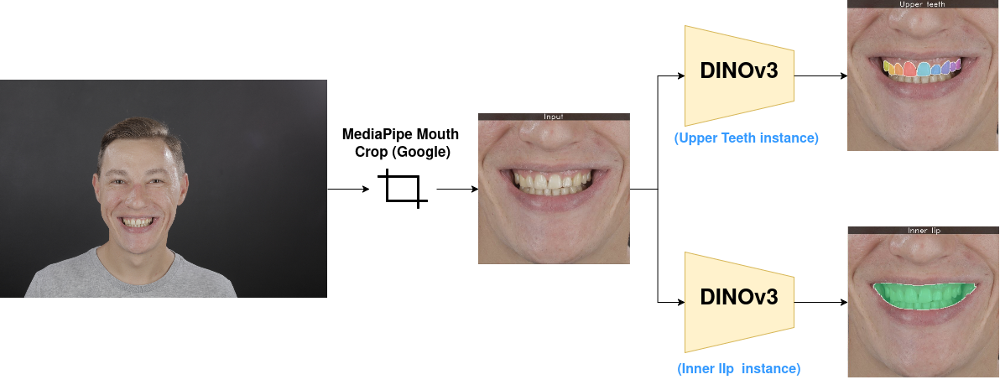
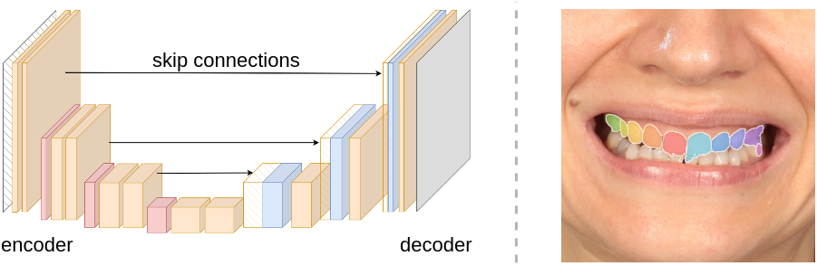
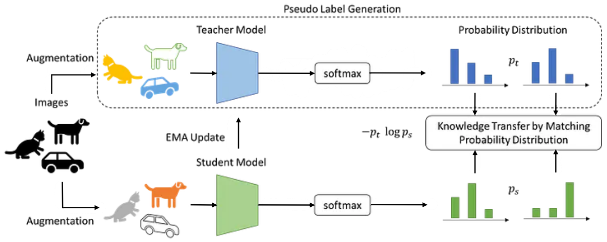
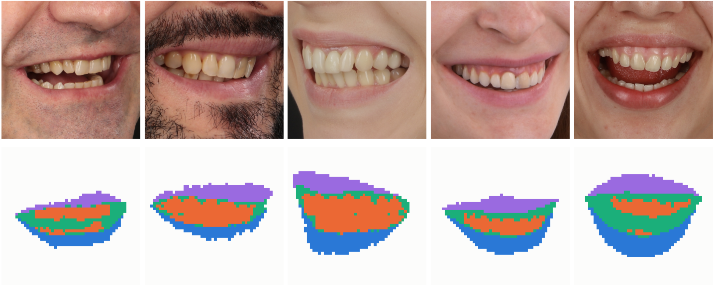
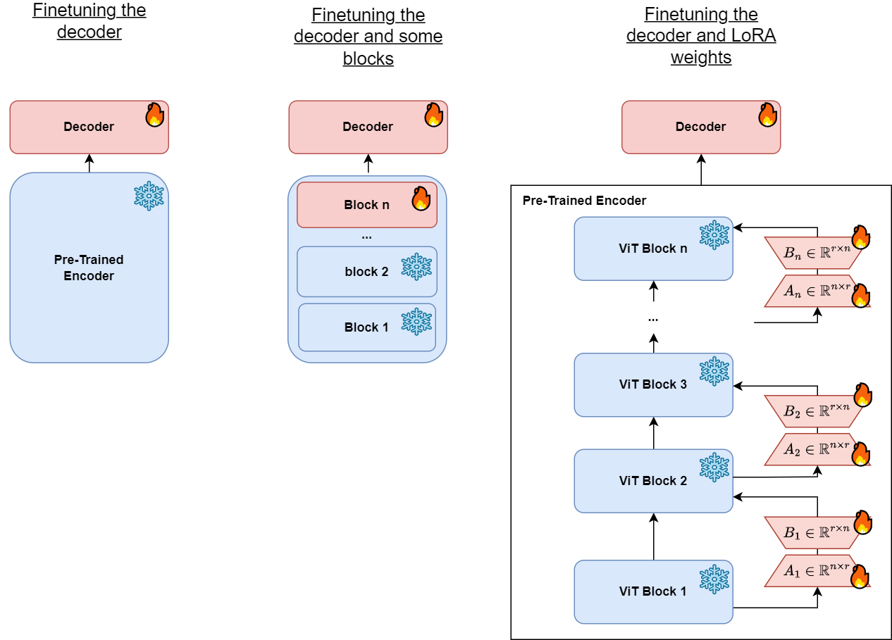
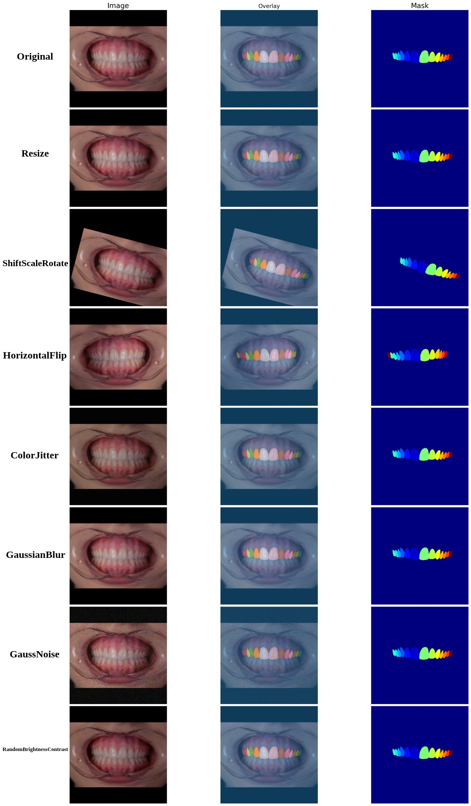
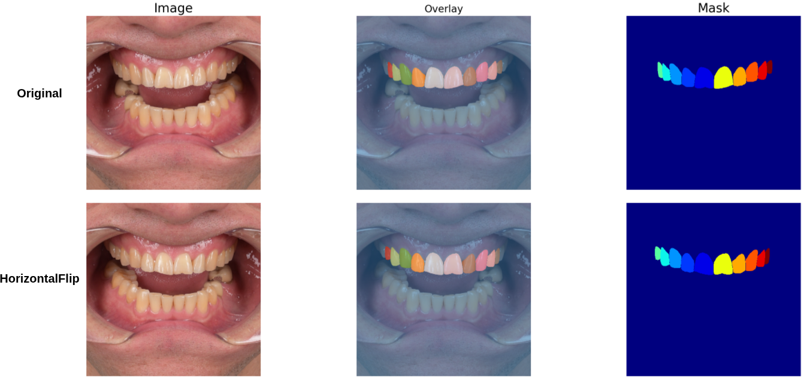
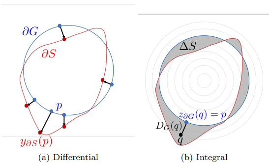
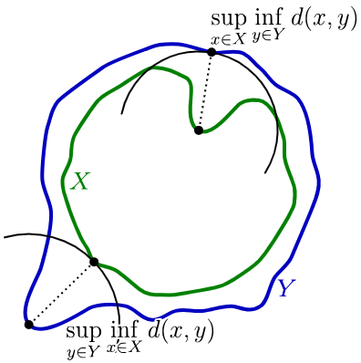
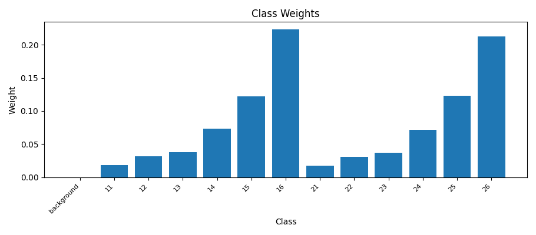

98.5% IoU
Two small neural networks that segment each individual upper tooth and the opening between the lips from a cropped mouth image — pixel by pixel.
Both read the same input — a cropped photo of a mouth — and both output a mask: a picture where every pixel is labelled with what it belongs to. They differ only in what they are asked to label.
Labels each visible upper tooth separately — not just "tooth", but which tooth, using the standard dental FDI numbering. That lets the pipeline reason about one tooth at a time.
FDI numbering: 11–16 run from the front-centre tooth backwards on
the patient's right, 21–26 the same on the left.
Outlines the mouth opening — the region framed by the lips. This is the window through which teeth are visible.
Trained and evaluated on the same photos as the teeth model, as a separate network.


A conventional convolutional network trained from scratch on our data alone. It compresses the image down and expands it back to a segmentation mask, with skip connections carrying fine detail across. It worked, but its segmentation quality plateaued — the outlines it drew did not follow the real edge of a tooth closely enough, and neighbouring teeth were often merged into one, because everything it knew had to be learned from our few thousand photos.

Meta's DINOv3 is a foundation model. It was pre-trained on over a billion images with no labels at all: two copies of the network see different crops of the same photo and are trained to agree with each other, which forces them to learn what objects and their boundaries actually are. We keep all of that and only teach it the last, small step — which region is which tooth, and which one is the inner lip.

This is why the approach works with so little annotated data. The encoder already distinguishes different mouth regions before seeing a single segmentation label. Fine-tuning only learns which region corresponds to the target class and sharpens its boundaries, requiring updates to only 2.6% of the network weights. U²-Net had to learn all of it from our photos alone, which is both why it plateaued and why it was so easy to overfit.
DINO ships as a family: same training recipe, many sizes. Larger backbones are marginally more accurate but cost considerably more memory and inference time, so both segmentation models use the smallest variant to minimize memory usage and inference latency.
| Variant | Parameters | Weights |
|---|---|---|
| ViT-S/14 used | 21 M | ~84 MB |
| ViT-B/14 | 86 M | ~330 MB |
| ViT-L/14 | 300 M | ~1.1 GB |
| Variant | Parameters | Weights |
|---|---|---|
| ViT-S/16 chosen | 21 M | ~83 MB |
| ViT-S+/16 | 29 M | ~110 MB |
| ViT-B/16 | 86 M | ~327 MB |
| ViT-L/16 | 300 M | ~1.2 GB |
We began on DINOv2, and switched to DINOv3 as soon as Meta released it — same small size, same budget, better features. The patch size also changed from 14 to 16 pixels, so we updated the input resolution from 504×504 to 512×512 to match the new backbone.
The results reported throughout this presentation is achieved using the smallest DINOv3 variant. Larger variants require substantially more memory and inference time, without providing sufficient benefits for our application.
Parameter counts are Meta's published numbers for each family. Weight sizes correspond to the downloaded Meta checkpoints stored locally.
Instead of retraining the whole network, we freeze it and train two small additions. This is the LoRA recipe, on the right of the diagram below.

The pre-trained DINOv3 transformer that turns the image into features. Untouched — so none of its general visual knowledge is lost, and it cannot overfit to our small dataset.
A pair of very thin matrices (rank 16) added beside the attention layer of every transformer block. They adapt the frozen features to inner lip and upper teeth at a tiny fraction of the parameter cost.
Takes the last four feature levels of the encoder and merges them coarse-to-fine, doubling resolution at each step. The fine levels are what keep individual tooth edges well-defined.

Hand-annotating photos is the expensive part, so the cheapest way to more training signal is to alter the ones we already have. Each photo is randomly transformed every time it is seen, so the model almost never gets the same input twice:

The training objective is computed pixel by pixel. While most pixels are classified correctly with little effort, the small number of pixels along tooth boundaries are much harder and have a greater impact on the perceived segmentation quality. The following loss functions place different emphasis on these challenging regions.
The baseline, applied to one pixel at a time. py is the probability the model assigned to that pixel's true class — the more confident and correct it is, the smaller the loss. Every pixel counts the same, which is exactly the problem here.
Cross-entropy with an extra (1 − py)γ factor that collapses to nearly zero on pixels already classified confidently. Training effort moves to the hard ones — the tooth edges. We use α = 0.25, γ = 2.
Lin et al., 2017 →Reads cross-entropy as an infinite polynomial and adds one adjustable term back on top. A single parameter, ε, changes how steeply the loss reacts to a confident mistake — a cheap way to tune what focal does by hand.
Leng et al., 2022 →
Instead of counting wrong pixels, it measures the distance between the predicted outline and the true one. The figure shows the two ways to do that: differentially, walking along the boundary and measuring the gap at each point, or integrally, over the whole area caught between the two outlines. Either way, a pixel far from the true edge costs more than one close to it.
Kervadec et al., 2018 →
Targets the worst error rather than the average: for every point on one outline it finds the nearest point on the other, and penalises the largest such gap. It judges a mask by its single worst mistake, so one patch left in the wrong place cannot hide behind thousands of correct pixels the way it does with a pixel-wise loss.
Karimi & Salcudean, 2019 →Whichever loss is used, each class is weighted according to how frequently it appears in the dataset. Rare classes receive larger weights so that common front teeth do not dominate the learning process. As shown in the chart, the rarest teeth receive substantially larger weights because they appear in very few training images. Without class weighting, errors on these teeth would contribute little to the loss, encouraging the model to focus primarily on the more common classes.

Measured using the final trained models with a 512×512 input resolution.
| Measurement | Upper teeth | Inner lip |
|---|---|---|
| Total parameters | 22,484,658 | 22,482,557 |
| Parameters trained by us | 588,594 | 586,493 |
| Model size (float32) | 85.77 MB | 85.76 MB |
| GPU time per image (RTX 4090, batch 1) | 5.0 ms | 5.0 ms |
| GPU throughput (batch 1) | 201 img/s | 200 img/s |
| GPU throughput (batch 8) | 304 img/s | 308 img/s |
| Peak GPU memory (batch 1) | 117 MB | 119 MB |
| CPU time per image (i9-13900KF) | 103 ms | 103 ms |
| CPU throughput | 9.7 img/s | 9.7 img/s |
Every one of the 440 annotated test photos was run through both models and compared against the human annotation. The score is IoU (intersection over union): it measures how much the predicted mask overlaps the human annotation. 100% is a perfect match; anything above about 90% is visually indistinguishable at a glance.
Each prediction is compared with the human annotation pixel by pixel. The shared pixels and the combined area are added up across all 440 photos, and the division happens once at the end, resulting in one IoU for the whole test set rather than one IoU per photo followed by averaging.
Front teeth are large, always visible and score highest. The back teeth (16, 26) are the hardest: they appear in only about a quarter of the photos and are often only partially visible.
A single pooled number can hide a handful of bad photos. So here the region IoU score is computed separately for each of the 440 photos, and every bar counts how many photos landed in that range. Instead of overall performance, this shows how reliably the model performs on individual photos.
Input photo, the GT human annotation, and the model's prediction — side by side. Samples are drawn evenly across the whole IoU range and ordered best to hardest. Click any sample to see it full size.